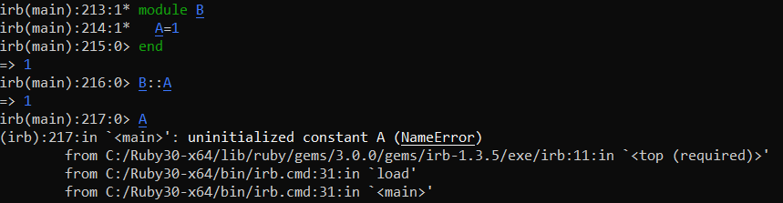

Constants
A constant always begins with an UPPERCASE letter (A-Z)
constant in a class or modulewhen we define a constant in a
class or a
module, it belongs to their scope (namespace)
example: we are able to access the constant A defined in the B by using its namespace B::A.
